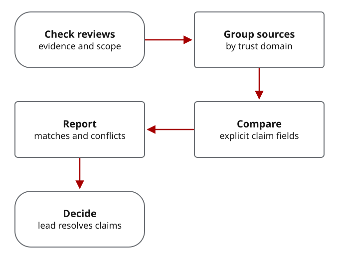
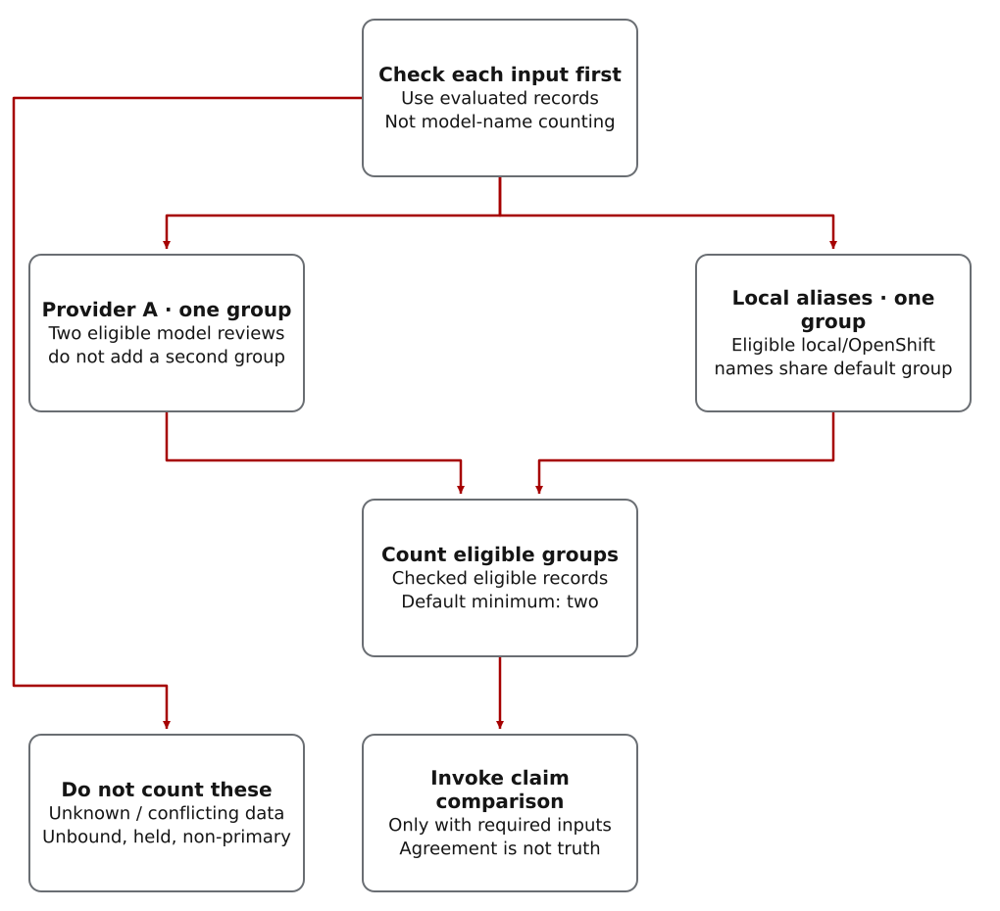

Why counting votes is not enough
The lead is usually the coordinating Codex agent. It may accept routine results only within your granted authority. Decisions reserved to you, or requiring human adjudication under the task or policy, stay with a human. The agent can prepare evidence and record that decision; it cannot approve it for you.
Different providers or deployments may catch different issues, but they can also share training data, assumptions and prompt biases. Agreement may repeat a common mistake rather than confirm a fact.
The comparison report shows the included and excluded reviews, comparable claims and disagreements between trust domains. The lead must resolve those disagreements; the report is not a release approval.
Two reviews disagree about encryption. What happens next?
Existing component test · authored inputs, not live model quotations. The repository fixture supplies accepted input records claiming AES-256-GCM and AES-128-CBC for the same cipher setting. No actual configuration or provider response is established. These are different settings, not alternative spellings of the same setting.
The real helper retains both values, their supplied sources and synthetic evidence, reports the conflict and returns an escalation recommendation. With structured comparison required, the enclosing synthesis result is blocked. The lead still needs to inspect the implementation to establish which claim is correct; the test does not perform that investigation.
Inspect the disagreement test and the comparison implementation. The neighboring test checks that matching claims produce an informational result, never a validated status. Other disagreements may stay below the escalation threshold; divergence does not always block synthesis.
How this is invoked: the operator or integration calls evaluate_synthesis_inputs(..., zero_trust_required=True) with evaluated inputs and explicit comparable claims. This is a tested Python helper, not an automatic step in every dispatched review. Its result is evidence for the lead's decision, not permission to act.
From checked reviews to resolved disagreements

- Check each review’s evidence and permitted actions first.
- Only reviews eligible to support the decision directly, with known provider or deployment groups, count toward the source minimum.
- CWO compares explicit structured claims.
- The report shows divergence, exclusions, and weakness-pattern hints.
- The architect resolves what affects implementation.
Record claims the helper can compare
CWO does not infer security claims from fluent prose. The
synthesis input must carry explicit zero_trust_claims
with stable claim IDs, categories, keys, values, claim types, and
evidence. This keeps the comparison deterministic and reviewable.
{
"claim_id": "auth:jwt_algorithms",
"category": "auth",
"key": "jwt_algorithms",
"value": "RS256 only",
"claim_type": "security_assertion",
"evidence": "Reviewer cited the configured allow-list."
}
Supported categories live in
policy/zero-trust-consensus-policy.yaml. The initial
set focuses on security-sensitive areas such as cryptography,
authentication, network behavior, dependencies, concurrency, data
handling, privilege boundaries, and supply chain concerns.
What comparison normalizes—and what it does not prove
Current comparison lowercases values and normalizes whitespace. It also removes some separator differences in short technical identifiers, so AES-256-GCM and aes256gcm can match. Version-like values such as TLS-1.2 and TLS-1.3 remain different.
Lowercasing can collapse case-sensitive paths or configuration values. Inspect their original values separately; normalized equality is not semantic validation. Before comparing claims with the same ID, reconcile their category, key and claim type. Conflicting categories can currently change the escalation score according to input order. This helper is not a schema-consistency or truth check.
Which sources count separately?
Adding a second model at the same local endpoint does not automatically add another counted domain. The default aliases group local/OpenShift inputs together; same-provider cloud models also do not establish separate provider domains. Conflicting domain metadata or an unbound self-declared domain is excluded. Distinct domains are a source-accounting rule, not measured statistical independence.
A trust domain groups reviews that share a provider or deployment boundary. CWO uses it for source counting, not as a quality score or proof of statistical independence. It reads trust_domain first, then provider_family, then provider_camp. Unknown domains and non-primary returns do not count toward the independent-domain minimum.

Read the diagram as text
- Evaluate each record before counting sources. The examples here are hypothetical eligible records, not a claim about any completed review campaign.
- Two accepted primary models from the same provider count as one provider group under the default rules. Eligible local/OpenShift endpoint aliases also share one default group, even when the model names differ.
- Unknown or conflicting domain metadata, unbound self-declared domains and non-primary or held inputs do not count. The table below retains the exact exclusions and the metadata-field precedence.
- Count the remaining eligible groups. The default minimum is two. When structured comparison is required, explicitly invoke the helper with sufficient eligible inputs and comparable claims. Passing the source-count requirement proves neither truth, statistical independence nor authority to act.
When comparable claims disagree
CWO matches claims by claim_id, or by category:key when no ID is supplied. If two counted domains give different normalized values for the same claim, the report records both values, their sources and evidence, and who must resolve the difference. This disagreement is called divergence.
The allowed states are intentionally narrow:
informational, blocked, and
divergent. There is no validated,
trusted, or confirmed state.
When comparison must stop the work
- Required zero-trust consensus blocks synthesis if too few independent domains are available.
- Material disagreements block using those findings in implementation until the lead resolves them.
- Weakness-pattern matches are informational unless another gate escalates them.
- Excluded inputs remain visible so operators can see what did not count.
- Agreement remains evidence, not permission to implement or a proof of correctness.
Continue with Model Synthesis for the broader multi-review flow, or Return Guardrails for quarantine, malpractice, sabotage, and provider-policy handling.